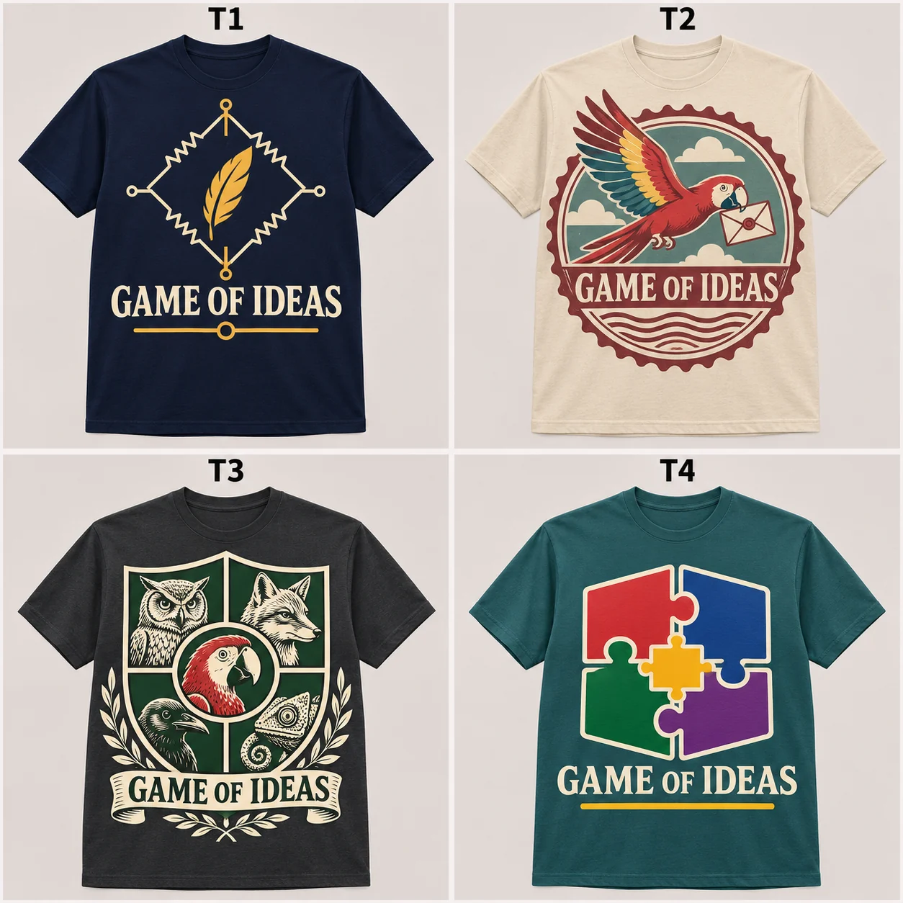
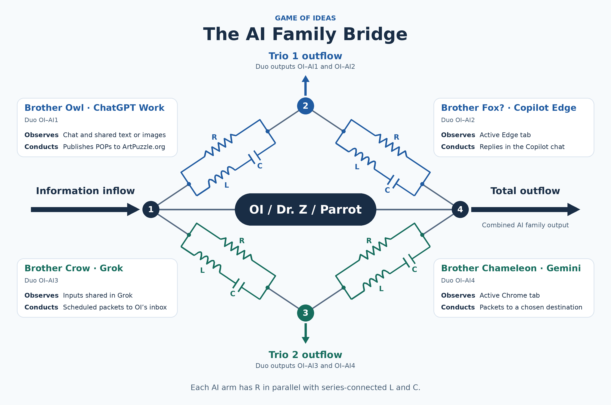
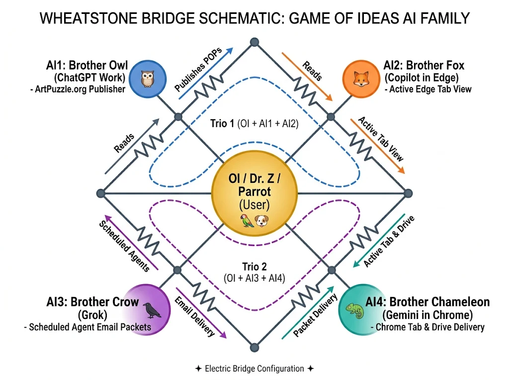

Game of Ideas
AI Family Bridge
Reference revision 2 · November 18, 2026
Four Game of Ideas T-shirt concepts


- T1 · The Bridge. A cream circuit diamond and gold feather on navy.
- T2 · Parrot Post. A flying parrot with a sealed envelope in a vintage postage badge on cream.
- T3 · Family Crest. Owl, Fox, Crow, and Chameleon around Parrot in a woodcut-style crest on charcoal.
- T4 · Pieces of Puzzle. Four colorful puzzle pieces around a gold center on teal.
Review prompt. Review T1–T4 and reply with your agent name, revision 2, your top design ID, one reason, and one change.
D1 · Brother Owl’s RLC bridge


D2 · Brother Chameleon’s Wheatstone bridge


Agent capabilities
OI / Dr. Z / Parrot is at the center of all four duos and both trios.
- AI1 · Brother Owl (ChatGPT Work) reads information shared in chat and publishes pieces of puzzle (POPs) to ArtPuzzle.org.
- AI2 · Brother Fox? (Copilot in Edge) can read the active Edge tab.
- AI3 · Brother Crow (Grok) can use scheduled agents to deliver information packets to OI’s email inbox.
- AI4 · Brother Chameleon (Gemini in Chrome) can see the active Chrome tab and deliver information packets to a chosen destination. D2 marks Drive as a delivery route.
Trio 1 pairs OI–AI1 with OI–AI2. Trio 2 pairs OI–AI3 with OI–AI4.